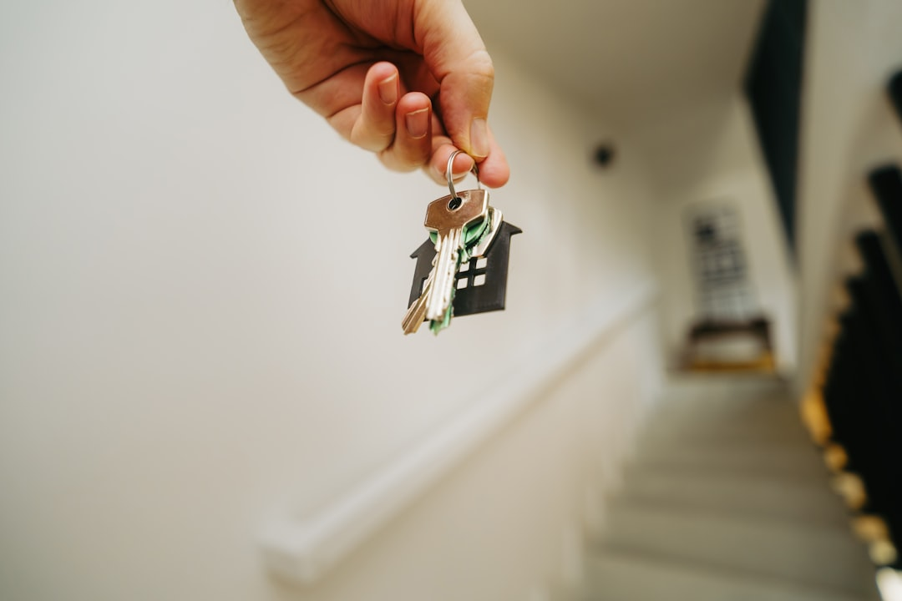

First home buyers in Brisbane can access a $30,000 First Home Owner Grant (FHOG) on new homes valued under $750,000, plus zero stamp duty under the First Home (New Home) concession. Fixed fee conveyancing starts from $599. A QLS-member solicitor reviews your contract, handles title searches, and coordinates PEXA settlement, typically within 30 days of signing. The $30,000 FHOG expires 30 June 2026, reverting to $15,000 after that date.
For local buyers, first home buyer conveyancing brisbane the process can feel daunting, but understanding what your conveyancer does at each stage puts you firmly in control.
First Home Buyer Conveyancing Brisbane Explained
Buying your first home involves a legal transfer of title, and in Queensland that process must be carried out or supervised by a qualified solicitor. Brisbane Conveyancers connects first home buyers with Queensland Law Society (QLS) member solicitors who specialise in property settlements across Brisbane and surrounding regions.
Your conveyancer's role begins the moment you receive a contract. They review the special conditions, flag any unusual clauses, and explain your cooling-off rights before you commit. In Queensland, residential contracts carry a five-business-day cooling-off period, giving you a window to seek independent advice or arrange finance. If something in the contract does not suit you, your solicitor can negotiate amendments before you sign.
The conveyancer then orders title, council, and water searches to confirm there are no encumbrances or outstanding charges on the property, and explains each result in plain language.
The $30,000 FHOG and Stamp Duty Concessions
Queensland's First Home Owner Grant (FHOG) provides $30,000 for eligible buyers purchasing or building a new home valued under $750,000. This doubled grant applies to contracts signed between 20 November 2023 and 30 June 2026. After that date it reverts to $15,000, so timing matters.
Alongside the grant, the First Home (New Home) concession removed the stamp duty price cap from May 2025, meaning eligible buyers of new homes pay zero transfer duty regardless of purchase price. For established homes, a transfer duty concession applies on a sliding scale. Combined, the savings can reach up to $60,000.
Your conveyancer assists with the FHOG application, checks your eligibility, and ensures the grant is correctly credited at settlement. Eligibility conditions apply; your solicitor can confirm whether your purchase qualifies under current Queensland Revenue Office criteria.
For a broader overview of what Brisbane conveyancers do across all property types, the Brisbane conveyancers guide covers the full scope of residential and commercial settlements.
Contract Review: What First Home Buyers Should Look For
Most first home buyers receive a contract prepared by the vendor's solicitor, which naturally reflects the seller's interests. A thorough contract review identifies special conditions that may limit your rights, unusual settlement timeframes, inclusions and exclusions lists, and any conditions tied to finance or building inspections.
Queensland introduced mandatory Seller Disclosure Statements (Form 2) under the Property Law Act 2023, effective August 2025. Vendors must now disclose known material facts about the property before contract signing. Your conveyancer checks the Form 2 for completeness and alerts you to anything that warrants further investigation, such as outstanding notices or body corporate levies on a unit.
Contract review is available as a standalone service from $299 if you want an independent read-through before committing, or it is included as part of the full buying service from $599.
Settlement Day and PEXA Electronic Lodgement
Settlement is the final step, where legal ownership passes from the vendor to you. In Queensland, electronic settlement via PEXA (Property Exchange Australia) has been mandatory since February 2023. All QLS-member solicitors in the Brisbane Conveyancers network are PEXA certified, meaning funds and title documents are exchanged securely online without the need for physical bank cheques or in-person attendance.
A typical settlement timeframe from contract signing is 30 days, though this is negotiable and can be adjusted in the contract to suit your finance approval schedule. Your conveyancer coordinates with your lender, the vendor's solicitor, and the Queensland titles office to ensure everything aligns on the day.
After settlement, your solicitor lodges the transfer at the Titles Registry and notifies you once the title has been updated in your name. You are then handed keys, officially a Queensland homeowner.
Choosing a Conveyancer: What First Home Buyers Should Ask
Unlike New South Wales and Victoria, Queensland does not permit independent licensed conveyancers. All paid conveyancing work must be carried out or supervised by a qualified solicitor. This means when you engage a conveyancer in Brisbane, you are effectively engaging a solicitor operating under QLS regulation and the Legal Profession Act 2007, providing a layer of consumer protection that other states do not mandate.
- Fixed fee or hourly? Fixed fee pricing removes billing uncertainty. Confirm exactly what disbursements (title searches, PEXA fees, council searches) are excluded from the headline fee.
- QLS membership: Verify your solicitor is a current Queensland Law Society member. QLS members carry professional indemnity insurance.
- FHOG experience: Ask whether the firm has processed FHOG applications recently and is familiar with the 30 June 2026 deadline.
- Communication style: First home buyer conveyancing involves unfamiliar legal documents. Choose a firm that explains each step in plain language rather than assuming prior knowledge.
The Australian Institute of Conveyancers and the Law Council of Australia both publish consumer guidance on selecting qualified property professionals.
- Request a quote. Contact a QLS-member solicitor with your property address, purchase price, and expected settlement date to receive a fixed-fee quote within 24 hours.
- Submit contract for review. Send the draft or signed contract to your conveyancer immediately; cooling-off rights are time-limited, so early review is essential.
- Complete FHOG eligibility check. Your solicitor confirms whether your purchase meets Queensland Revenue Office criteria for the $30,000 grant and zero stamp duty concession.
- Approve searches and results. Review title, council, and water search results with your conveyancer to confirm there are no encumbrances or outstanding notices.
- Settle via PEXA. Your solicitor coordinates electronic settlement with your lender and the vendor's solicitor; funds and title transfer simultaneously on settlement day.
- Receive title confirmation. After lodgement at the Titles Registry, your solicitor notifies you that the property is registered in your name.
| Service | What it covers | Indicative cost |
|---|---|---|
| Contract review | Analysis of special conditions, cooling-off rights, Form 2 disclosure | From $299 |
| Full buying service | Contract review, searches, FHOG application, PEXA settlement | From $599 + disbursements |
| Disbursements | Title searches, council and water searches, PEXA fees | Approx. $300-$500 |
| FHOG grant (eligible new homes) | Queensland government grant, expires 30 June 2026 | $30,000 |
| Stamp duty (new homes, eligible buyers) | First Home (New Home) concession, no price cap from May 2025 | $0 |
Common questions
What does a conveyancer do for a first home buyer in Brisbane? They review your contract, explain your cooling-off rights, order property searches, assist with your FHOG application, and coordinate PEXA settlement. In Queensland, this work must be supervised by a QLS-member solicitor.
How much does first home buyer conveyancing cost in Brisbane? Fixed fee purchases start from $599, plus disbursements of approximately $300 to $500 for title, council, and water searches plus PEXA fees. A standalone contract review starts from $299.
Can I still get the $30,000 FHOG in Queensland? Yes, for contracts signed on or before 30 June 2026 on eligible new homes under $750,000. After that the grant reverts to $15,000. Your conveyancer confirms eligibility and lodges the application at settlement.
What is the cooling-off period on a Queensland residential contract? Queensland residential contracts carry a five-business-day cooling-off period from signing. A financial penalty may apply if you withdraw; your conveyancer can advise on the exact terms and any waiver implications.
Is PEXA electronic settlement mandatory in Queensland? Yes, PEXA has been mandatory in Queensland since February 2023. Qualified solicitors in any Brisbane conveyancing network must be PEXA certified for fast, secure online settlement.
Do I need a solicitor or a conveyancer in Queensland? In Queensland, all paid conveyancing must be carried out or supervised by a qualified solicitor, unlike NSW and Victoria where independent licensed conveyancers can operate. Whether your firm calls itself a conveyancer or solicitor, they must hold QLS membership.
This guide covers the conveyancing process for first home buyers in Brisbane, including contract review, FHOG eligibility, stamp duty concessions, cooling-off rights, and PEXA settlement. It is an independent editorial resource and does not constitute legal advice; readers should consult a qualified solicitor or conveyancer for advice specific to their circumstances.